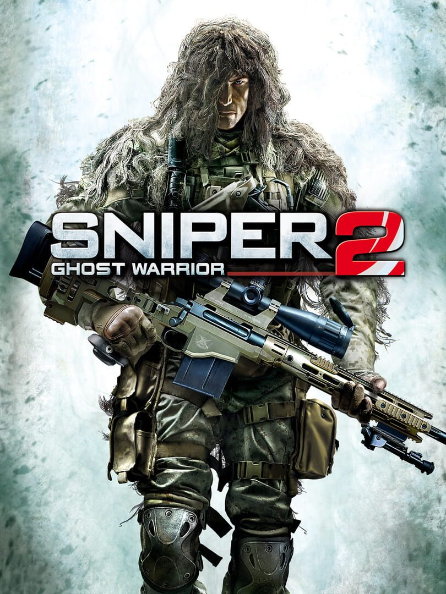

Sniper Ghost Warrior 2
Sniper Ghost Warrior 2
Details
|  | |
| Playtime | Not Played |
| Last Activity | Never |
| Added | 02/12/2022 9:03:41 |
| Modified | 18/05/2025 0:29:58 |
| Completion Status | Not Played |
| Library | Steam |
| Source | Steam |
| Platform | PC (Windows) |
| Release Date | 11/03/2013 |
| Community Score | 60 |
| Critic Score | 52 |
| User Score | |
| Genre | Shooter Tactical |
| Developer | City Interactive |
| Publisher | City Interactive |
| Feature | Multiplayer Single Player |
| Links | Official Website Steam |
| Tag | Action Adventure Atmospheric Bullet Time Controller Co-op Difficult First-Person FPS Military Multiplayer Online Co-Op Open World Shooter Simulation Singleplayer Sniper Stealth Strategy Tactical |
Description
Sniper: Ghost Warrior 2 is the only multi-platform, first-person, modern shooter exclusively designed around the sniper experience. It takes the bulls-eye precision of its predecessor to new and exciting heights, offering more diverse sniper challenges; a rebuilt AI system and the thrilling “one shot, one kill” precision that made the original a huge hit, selling 3 million copies worldwide. Taking advantage of the advanced capabilities of the CryENGINE3, Sniper: Ghost Warrior 2 also delivers striking graphic environments.
Key Features
- Motion Sense Trigger System: an innovative first in which the way the player touches the controller influences the on-screen shot. Like in real-world sniping, in-game shooting requires a steady squeeze of the pad’s trigger so that when the round is fired, the rifle is more accurate. Jerk the trigger and the round is thrown off, thus missing the target and alerting a highly motivated enemy to your presence.
- Realistic Ballistics: the hallmark of the Sniper franchise is the realism of its shooting dynamics. Wind speed, distance, gravity and bullet-drop all play critical roles in the performance of your shot.
- Refined Shooting Mechanics: a proper breathing technique to steady your heart rate is as important as calculating the time on target of your round, and the best snipers control both their heart and their head. From acquisition of target until the slow steady trigger pull, a sniper must pull together everything to achieve the ideal “one shot; one kill.”
- Improved Enemy AI: the Artificial Intelligence (AI) system was completely re-tooled and designed from scratch. Much of the improvements were made possible from the switch to the CryEngine 3. Expect everything from flanking movements to frontal assaults as the enemy tries to engage you in close quarters where your rifle is less effective.
- New Target-Rich Environments: Sniper Ghost Warrior 2 adds new urban environments like Sarajevo and treacherous mountain terrain to go along with jungles that are as lush and deadly as ever.
- Various Difficulty Levels: To diversify gameplay and make it accessible to the widest group of gamers, CI Games is introducing three difficulty levels that totally change the nature of the game. You decide how to play – either relax and be the ultimate predator or test your skill and experience the game on Expert Mode.
- Bullet-Cam: everyone’s favorite feature returns to reward expert shots and show the battlefield from a totally new viewpoint. See what the transfer of kinetic energy – a bullet’s true stopping power – can do to the enemy from 1000 meters or more!
- Bullet Penetration: concealment doesn’t necessarily mean cover. In Sniper: Ghost Warrior 2, bullets behave as they would in real life and are able to dispatch enemies hiding behind various types of covers. You can also try to line up your enemies and let a single round take out an entire squad. Wait ‘til you see that on Bullet Cam!
- Expanded List of Sniper Rifles: Try out the world’s most advanced sniper rifles, each of them meticulously recreated so that they accurately simulate the modern weaponry found on today’s battlefields.
- New Gear: own the night with the introduction of thermal and night vision optics, plus a pair of powerful binoculars critical for locating the enemy before they spot you.